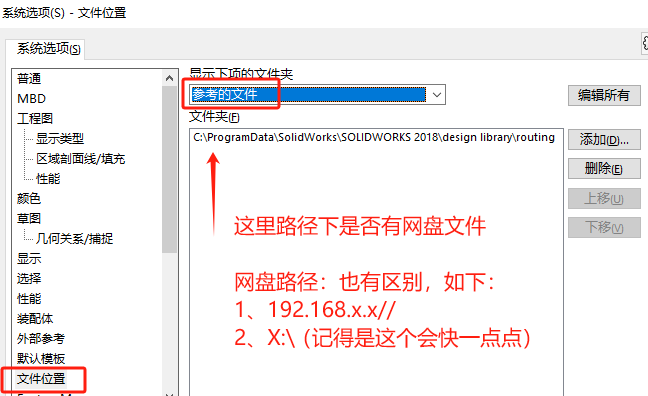
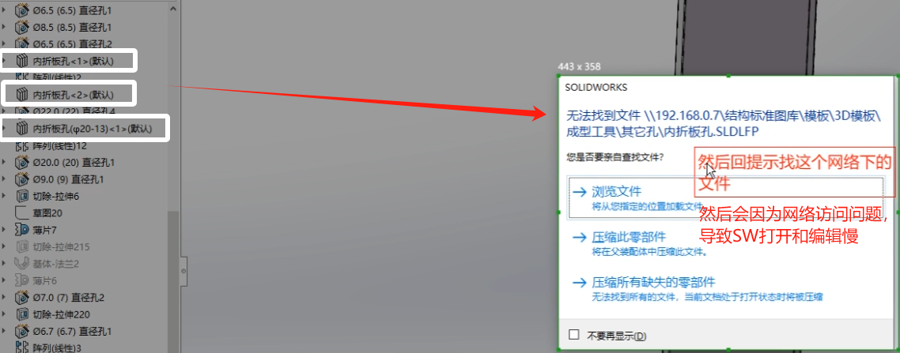

打开文件速度卡慢
我们在打开SW文件时会经过一些我们看不到的流程（如图）。针对过程中，可能会出现的卡慢现象我们进行如下分析：

零件
针对问题零件，我们最终目标是确认它是否还能通过 SW 打开，如果不行则需考虑重新设计该零件。
graph LR 检查-->是否有加密问题--no-->是否有网盘问题--no-->是否电脑问题 是否有加密问题--yes-->验证解密并在未加密环境打开 是否有网盘问题--yes-->验证在本地打开能否打开 是否电脑问题--yes-->验证在其他电脑打开
通过改变问题文件的使用环境打开该文件，验证是否为特定电脑或特定文件的限制问题。
其他情况：例如使用了第三方API操作情况导致，需要具体问题文件进行分析。或者是当作文件损坏（建议查找备份或新建）
装配体
参考文件夹
【】
工程图
特殊情况
网络
索引选项
同份文件在打开时卡慢，
打开后保存，再打开恢复正常。